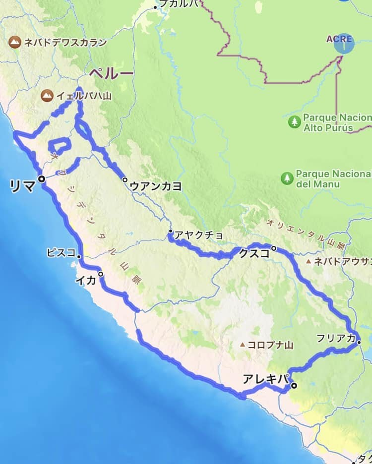
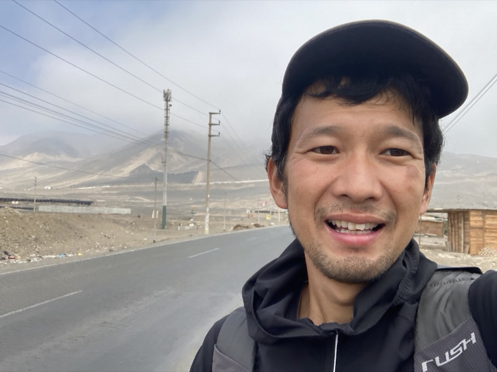
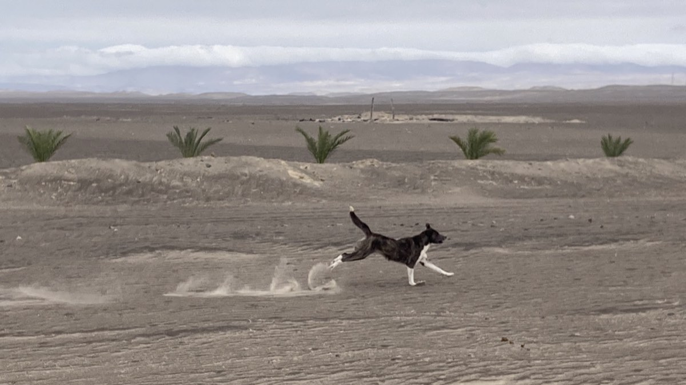
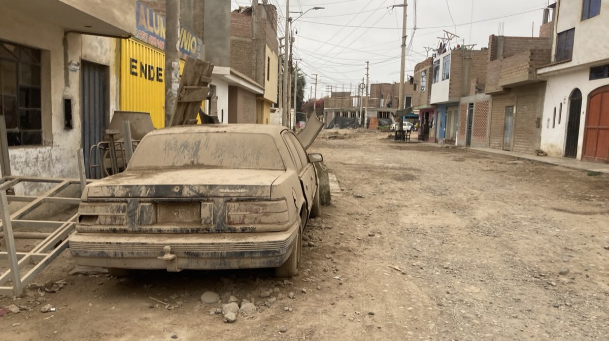
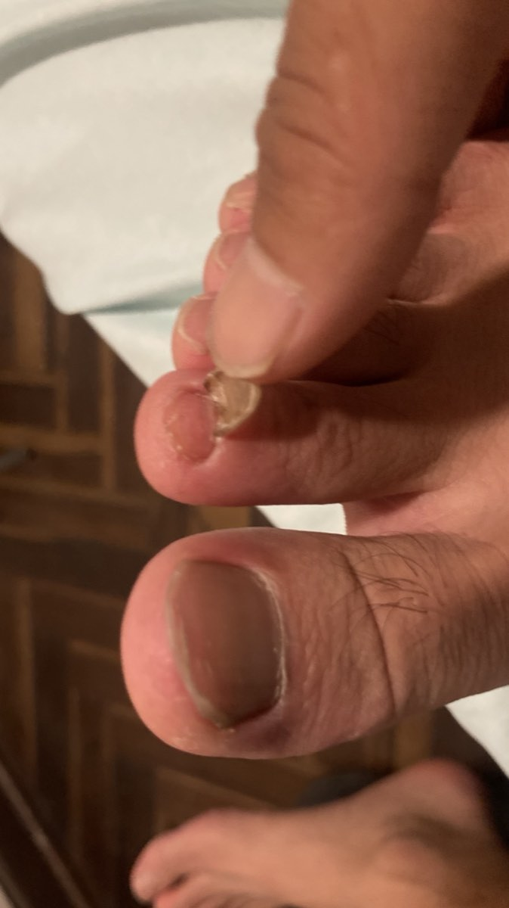
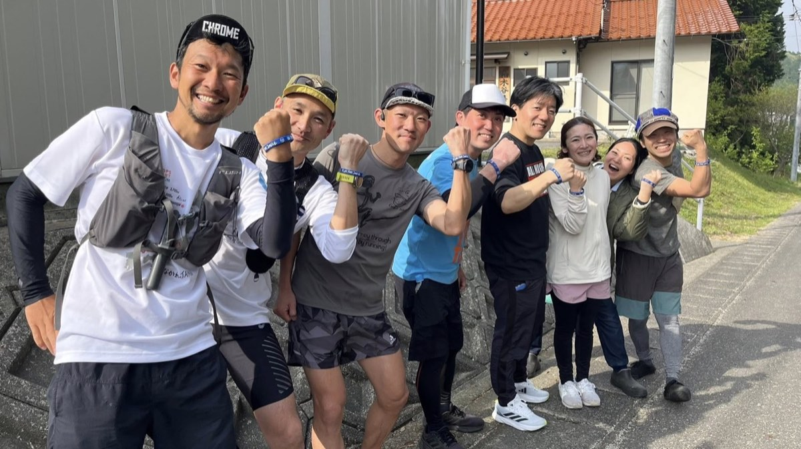

GPS RUNNER
CASE STUDY ｜ 海外プロジェクト
2024年、挑戦の舞台は南米ペルー。約90日間・4600kmをかけ、人類史上最大級のGPSアート「アルパカ」の地上絵に挑みました。
THE PROJECT
2024年の挑戦の舞台は南米ペルー。標高0m〜4,000m級の広大な大地をキャンバスに、 体長約3,000km（3,000,000m）という、大陸と比較できるスケールの「アルパカ」を GPSアートで描くプロジェクトです。
約90日間をかけ、総距離4,600kmを移動・制作。予算と安全上の事情から実際に走れたのは 約1,000km。残りはヒッチハイクや乗り合いバスなどあらゆる手段を使い、ついにアルパカの 地上絵を完成させました。

完成した「アルパカ」の地上絵（GPSアート）
THE JOURNEY
3,000ドルの詐欺に遭い、砂漠では野犬の群れに何度も襲われ、標高4,000m級の山岳地帯では タクシーに置き去りにされ遭難しかけました。爪が剥がれるほど過酷な道のりでしたが、 約240名の大応援団に支えられ、生きて日本へ帰国することができました。





PRESS
周年事業・観光PR・地域や企業のメッセージ発信など、スケールの大きな企画もご相談ください。